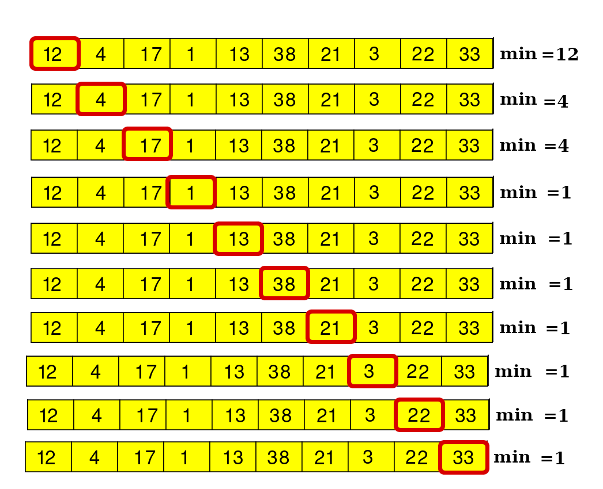
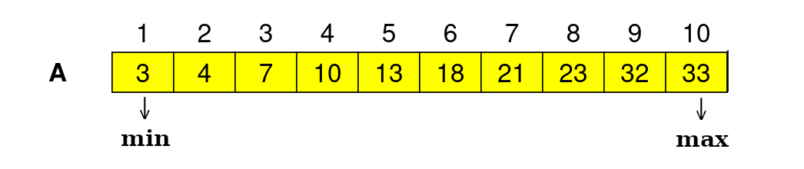

Krótki opis:
Algorytm wyszukiwania, wśród elementów listy, elementu o najmniejszej wartości.
Przechodzimy po liście i porównujemy wartości poszczególnych elementów ze zmienną, do której na początku przypisujemy wartość pierwszego elementu.
Jeżeli nowy element jest mniejszy od zmiennej, to zmieniamy wartość, w innym przypadku przechodzimy do kolejnej komórki listy.
Szczegółowy opis:
Algorytm:
-
Początkowe założenia: Zapisujemy do zmiennej min wartość pierwszego elementu listy i ustawiamy się na drugi element tablicy
-
Dopóki nie dotrzesz do ostatniego elementu, postępuj następująco:
-
Czy jest dany element mniejszy od wartości min?
-
Jeżeli tak - zmieniamy wartość min na wartość danego elementu, jeżeli nie - nic nie robimy.
-
Przechodzimy do następnego elemetu.
-
Koniec. (Minimalna wartość tablicy znajduje się w zmiennej min)

W tablice posortowanej:
-
Minimalna wartość znajduje się na pierwszej pozycji.
-
Maksymalna wartość znajduje się na ostatniej pozycji.
